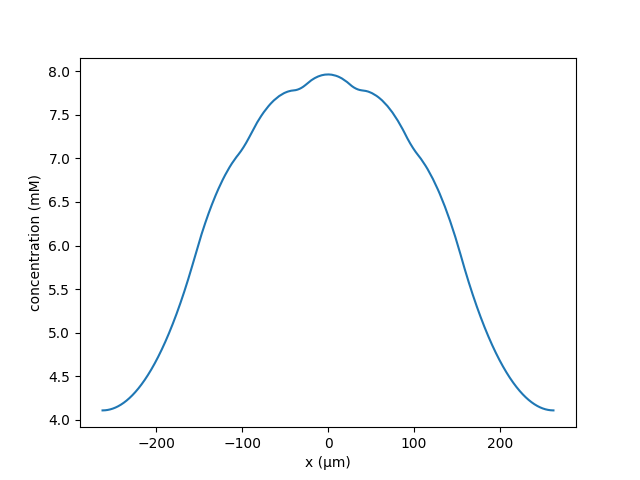

Readme file for ModelDB programs associated with the paper:
Conditions for synaptic specificity during the maintenance phase of synaptic
plasticity, By Huertas et. Al 2022, eNeuro
This code was contributed by HZ Shouval and AJH Newton, questions should be
addressed to
harel.shouval"at"uth.tmc.edu or
adam.newton"at"downstate.edu
There are 3 MATLAB files and 2 NEURON RxD models written in python.
MATLAB code:
1. Calculating_Lcrit_Head_step.m. This program generates a curve of the critical
distance as a function of lambda, when the switch is in the spine head. For
comparison the curve with switch in dendrite is also plotted. This program
assumes that the switch is a step function. This program was used for figure 5D.
2. Calculating_Lcrit_Head_Hill.m Similar to file above just when the switch is a
hill function. This can be used for comparison to the Neuron simulations, as in
figure 5C.
3. Lcrit_active_inactive.m Used for showing the effect of having different
diffusion coefficients in active and inactive spines. Used for figure 9.
The python code simulates models of the protein concentrations using NEURON RxD.
hybrid_spines.py simulates the concentration of protein when the switch is in
the spine head.
usage: hybrid_spines.py [-h] [--N [N]] [--Ls [LS]] [--D2 [D2]]
[--lambd [LAMBD]] [--k [K]] [--dx [DX]]
[--neck_length [NECK_LENGTH]] [--initial [INITIAL]]
[--output [OUTPUT]]
Run hybrid 1D/3D spines simulation
optional arguments:
-h, --help show this help message and exit
--N [N] number of spines either side of the central spine --
default 5
--Ls [LS] length between spines -- default 19um
--D2 [D2] Diffusion in potentiated spines -- default 1e-3um^2/ms
--lambd [LAMBD] length scale -- default 60um
--k [K] protein production rate -- default 0.215e-4
--dx [DX] 3D discretization -- default use 1D only
--neck_length [NECK_LENGTH]
spine neck length -- default 2um
--initial [INITIAL] json file for initial concentrations by segment
--output [OUTPUT] output filename for summary data -- default
'critical_unscaled.db'
E.g.
python hybrid_spines.py --k 3.687147e-05 --lambd 120 --N 10 --Ls 12
Produces a plot of 10 spines on a dendrite where the central spine becomes
potentiated
Whereas when the distance between spines is increased to 14μm, the central
spine does not become potentiated
python hybrid_spines.py --k 3.687147e-05 --lambd 120 --N 10 --Ls 13
clustered_spines.py was used to simulate clusters of spines for figure 7.
usage: clustered_spines.py [-h] [--N [N]] [--nactive [NACTIVE]] [--C [C]]
[--Ls [LS]] [--Lc [LC]] [--lambd [LAMBD]] [--k [K]]
[--initial [INITIAL]] [--summary [SUMMARY]]
Run 1D simulations with clusters of spines.
optional arguments:
-h, --help show this help message and exit
--N [N] number of spines in a cluster -- default 5
--nactive [NACTIVE] number of potentiated clusters -- default 1
--C [C] number of clusters -- default 5
--Ls [LS] length between spines -- default 5um
--Lc [LC] length between clusters -- default 15um
--lambd [LAMBD] length scale -- default 60um
--k [K] protein production rate -- default 0.215e-4
--initial [INITIAL] json file for initial concentrations by segment
--summary [SUMMARY] a file to store if the spine was potentiated, if
provided no other output will be given
An example where the neighbours a single potentiated central cluster remain
unpotentiated;
python clustered_spines.py --k 3.687147e-5 --lambd 120 --C 5 --nactive 1 \
--N 25 --Ls 2.0 --Lc 15
When the distance between clusters was reduced to 15μm, the neighbours become
potentiated;
python clustered_spines.py --k 3.687147e-5 --lambd 120 --C 5 --nactive 1 \
--N 25 --Ls 2.0 --Lc 15
